Manual de marca 2.0
Revisión 2.1
Noviembre de 2026
Crecimiento
con
estructura.
A la vista.
Primero el orden. Después el volumen.
Este manual no cambia el logo. Sube el nivel de todo lo que lo rodea: lo que decimos, cómo suena, cómo se mueve y cómo se construye en pantalla. Cada pieza con la marca We Rock debe verse y leerse como una firma que diseña y opera sistemas de crecimiento.
Darle estructura al crecimiento de las empresas que ya tienen historia y quieren renovarse.
Marketing, tecnología y ventas bajo una sola dirección, con las cifras a la vista.
Empresas consolidadas que buscan renovarse: instituciones, salud, educación, servicios profesionales y entidades públicas.
Firma, no agencia
Es la decisión de posicionamiento más importante de la marca. Rige el lenguaje, los precios y el tipo de cliente.
We Rock es una firma de crecimiento estratégico. Diseña y opera sistemas empresariales de crecimiento. No vende piezas sueltas: responde por el sistema completo.
Agencia
- Entrega piezas y campañas.
- Reporta actividad: publicaciones, clics, alcance.
- Cada servicio tiene un proveedor distinto.
- Promete resultados.
Firma
- Diseña y opera sistemas.
- Muestra cifras con fecha, método y fuente.
- Una sola dirección para marketing, tecnología y ventas.
- Mide, publica y corrige.
Los sistemas
Los nombres van siempre completos y con ™. No se abrevian ni se traducen.
- Arquitectura de Crecimiento™Marketing estratégico. La demanda: marca, contenido, pauta, SEO y AEO.
- Infraestructura Digital™Tecnología empresarial. La operación: sitios, e-commerce, CRM, automatización y tableros.
- Sistemas de Conversión Comercial™Conversión comercial. El cierre: pipeline, seguimiento y agentes con IA.
- HalconBotAgente de IA propio para WhatsApp e Instagram. Atiende, cotiza y agenda las 24 horas.
- Dirección Estratégica™La capa que ordena las demás. Va incluida en los tres sistemas.
Sistema abierto.
Todas las agencias dicen que miden resultados. Ninguna muestra los suyos. We Rock opera su propio sistema de crecimiento a la vista de todos: el visitante no lee una promesa, ve el sistema funcionando, lo prueba y después decide.
Tablero abierto
Cinco cifras reales de We Rock, con fecha y hora de actualización. Solo porcentajes, tiempos y conteos. Nunca facturación.
Diagnóstico de estructura
Siete preguntas, noventa segundos y un informe en pantalla. Entrega valor antes de pedir un dato.
Bitácoras
Cada caso es una línea de tiempo: punto de partida, qué se construyó, cifra y cómo se midió. Con permiso escrito.
HalconBot en casa
El agente responde en el propio sitio de We Rock. La demostración es el producto funcionando.
- Todo dato lleva fecha, método y fuente. Si falta uno de los tres, no se publica.
- El color distingue hecho de adorno. Rojo es marca y acción. Ámbar es dato. Verde es en vivo. Ultramar es interacción.
- El movimiento explica o confirma. Lo único que se mueve siempre es el pulso, porque significa que el sistema está encendido.
- La honestidad incluye cómo operamos. Dirección de David Higuera, sistemas de IA propios y una red de especialistas por proyecto.
No somos una agencia.
Somos la firma que arma la estructura.
Marketing, tecnología y ventas tocan al mismo tempo.
Una sola dirección.
No prometemos crecimiento. Lo medimos y lo mostramos.
Operamos con sistemas propios y con inteligencia artificial. Y lo decimos.
Primero el orden. Después el volumen.
Personalidad
Cinco rasgos y su límite. El límite importa tanto como el rasgo.
El rock de We Rock no es un tema ni una estética de guitarras. Es actitud y oficio: ensayo, tempo, entrada exacta y volumen cuando toca. Por eso la marca usa ritmo, contraste y silencio, y no calaveras ni amplificadores.
Quién dirige
Datos tomados del portafolio publicado de David Higuera. No se agregan cifras ni premios que no estén ahí.
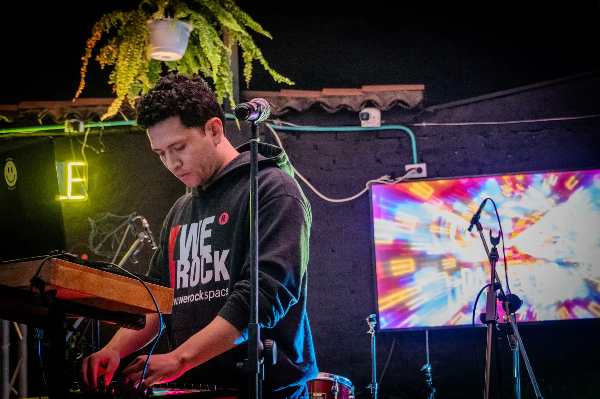
David Higuera dirige We Rock. Tiene más de 15 años en estrategia digital y opera la firma con sistemas de IA propios, sin nómina.
- Boxi Sleep
- Fue su CSO: dirigió marketing, desarrollo y área comercial. Ronda de €4,5 M con Axon Partners. Finalista de los eCommerce Awards Colombia 2017.
- Sídney
- Diseño y desarrollo web con Think Creative Agency. Oro y Plata en los MUSE Creative Awards 2025.
- Tres países
- Clientes en Colombia, Australia y Estados Unidos.
- Marca
- Diseñó la marca del festival La Kasa x La Ventana, en Tabio.
- Música
- Como Da Get Up produce house con raíces latinas y tambores. De ahí salen el tempo y el pulso de este manual.
Cómo se dice. "We Rock es una firma dirigida por David Higuera, operada con sistemas de IA propios y una red de especialistas por proyecto." Es verdad y es el argumento para una empresa que quiere renovarse: así se opera hoy.
Verbos. Cifras. Punto.
La voz es una sola y no cambia: la de un socio que sabe lo que hace y lo explica sin adornos. El tono sí se ajusta al canal y al momento del lector. Si un texto podría firmarlo cualquier agencia, no es de We Rock.
Cinco principios
Si el gerente tiene que leer dos veces, la frase está mal. El juego de palabras se usa solo cuando no cuesta claridad.
"Diseñamos, operamos, medimos." Nunca "innovadores, integrales, apasionados". El adjetivo promete. El verbo responde.
Toda cifra lleva periodo, método y fuente. Si no se puede sostener frente al cliente, no se escribe.
Tono consultivo: una recomendación, la razón y lo que cuesta. Sin presión, sin urgencias inventadas.
Dirección de David Higuera, sistemas de IA propios y especialistas por proyecto. No se habla de "equipo interno" ni de "departamentos".
Palabras
Las de la izquierda construyen la firma. Las tachadas nos devuelven al montón.
- Firma
- Sistema
- Estructura
- Dirección
- Diagnóstico
- Cifra
- Bitácora
- Operar
- Medir
- Renovar
- A la vista
- Agencia
- Soluciones integrales
- 360
- Potenciar
- Siguiente nivel
- Apasionados
- Resultados garantizados
- Equipo interno
- Viral
- Empresa de crecimiento
Antes y después
Los "antes" marcados como sitio actual salen de werock.space, según la auditoría del 6 de noviembre de 2026.
Empresa de Crecimiento EstratégicoAparece 122 veces en el texto visible. "Firma" no aparece.
Firma de crecimiento estratégicoUna sola forma, en todo lugar. En minúscula después de la primera palabra.
Equipo interno dedicado, sin subcontratos, sin juniors.Ya no describe la operación.
Dirección de David Higuera, sistemas de IA propios y una red de especialistas por proyecto.Es verdad y es un diferencial.
Solicitar ahoraNo dice qué se solicita ni cuánto toma.
Hacer el diagnóstico, 90 segundosVerbo, objeto y costo en tiempo.
+190 % tasa de cierreSin fecha, sin periodo, sin método, sin caso detrás.
Cifra, periodo, cómo se midió y permiso del cliente. Los cuatro, o no se publica.Regla del Sistema abierto.
Somos expertos apasionados por llevar tu marca al siguiente nivel.Lo puede firmar cualquiera.
Construimos la estructura que hace crecer tu empresa. Y te mostramos la nuestra.Titular del concepto Sistema abierto.
Tono por canal
Los nombres y situaciones de los ejemplos son ilustrativos.
Pendiente de David: tú o ustedRecomendación: tú en web y redes, como el sitio actual. Usted en propuestas, correo y primer contacto por WhatsApp con instituciones.
- Tono
- Seguro y sobrio. Una idea por pantalla.
- Forma
- Titular de 4 a 9 palabras. Párrafos de máximo 3 líneas. Encabezados que repiten la pregunta del cliente.
- Cierre
- Un solo llamado a la acción por bloque.
- Tono
- Consultivo y exacto. De usted.
- Forma
- Diagnóstico, recomendación, entregables, plazo e inversión. En ese orden. Precios en pesos con punto de miles.
- Nunca
- Adjetivos sobre nosotros. Promesas de resultado. Jerga sin traducir.
- Tono
- El más suelto de los cinco. Opinión con criterio y algo de humor seco.
- Forma
- Una tesis por pieza. Primera lámina sin logo grande: gana la idea. De tú.
- Nunca
- Frases motivacionales, tendencias sin relación con el negocio, cifras de clientes sin permiso.
- Tono
- Humano y breve. Como escribe David.
- Forma
- Máximo 3 líneas por mensaje. Una pregunta por mensaje. Hora y día concretos.
- HalconBot
- Se identifica siempre como agente de IA y ofrece pasar a una persona.
- Tono
- Formal sin rigidez. De usted.
- Forma
- Asunto que dice qué es. Lo importante en la primera línea. Un solo pedido por correo.
- Cierre
- Siguiente paso con fecha. Firma oficial.
Reglas de escritura
- Nombre
- We Rock. Dos palabras, W y R mayúsculas. Nunca WeRock, WEROCK ni We rock.
- Puntuación
- Sin guiones ni rayas como puntuación en texto corrido. Coma, punto, dos puntos o paréntesis.
- Mayúsculas
- Solo en titulares de portada y de capítulo. Los subtítulos y botones largos van en tipo oración.
- Cifras
- Precios en pesos con punto de miles: $1.200.000. Decimales con coma: 4,9. Porcentaje con espacio: 74 %. Euros: €4,5 M.
- Sistemas
- Arquitectura de Crecimiento™, Infraestructura Digital™, Sistemas de Conversión Comercial™, Dirección Estratégica™. Siempre completos.
- Jerga
- Se traduce. AEO se explica la primera vez: aparecer en las respuestas de los asistentes de IA.
- Nada inventado
- Ni cifras, ni testimonios, ni casos sin permiso escrito del cliente.
El logo no se toca.
Es el mismo de 2018, extraído en vectores del archivo maestro. La versión 2.0 no lo cambia: fija cuándo va cada versión, cuánto aire necesita y qué hace el rayo cuando trabaja solo.
Anatomía
- A · El rayo
- Energía y acción. Rojo siempre, salvo sobre fondo rojo, donde pasa a negro, y en las versiones a una tinta.
- B · El nombre
- WE ROCK en dos líneas. No se reescribe con ninguna fuente, tampoco con Barlow. Siempre se usa el archivo.
- C · El círculo R
- Sello de cierre. Acompaña al rayo en color y no se separa del logo. Su diámetro es la unidad de medida x.
Cinco versiones
El fondo decide la versión. No hay otras combinaciones.
PDF y PNG en el Brand Kit v1.0 ↗Fondos negros, tinta y azul noche. Es la versión de la casa.
Descargar SVG
Fondos blancos y crema. Documentos y papelería.
Descargar SVG
Rayo y círculo en negro. Única forma correcta sobre rojo.
Descargar SVG
Sobre fotografía y video, con un velo negro de 45 % como mínimo.
Descargar SVG
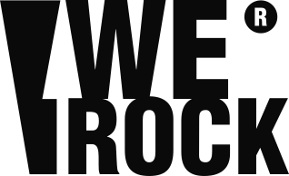
Sellos, grabados, documentos legales, impresión a una tinta.
Descargar SVG
Rayo rojo sobre negro. Pestaña del navegador y perfiles.
Descargar SVG
Área de seguridad
x es el diámetro del círculo R. Se deja libre una x por cada lado. Nada entra ahí: ni texto, ni borde de pieza, ni otra marca.
Tamaños mínimos
Por debajo de 120 px el círculo R se empasta. Ahí entra el rayo.
- Digital
- 120 px de ancho como mínimo. En barras de navegación, 132 px o más.
- Impreso
- 25 mm de ancho como mínimo.
- Rayo solo
- 16 px de alto como mínimo. Es el recurso cuando el logo completo no cabe o no se lee.
- Una vez
- Una aparición por pieza o por cara. En carruseles, primera y última lámina.
Pendiente de David Las medidas x, 120 px y 25 mm vienen del Brand Kit v1.0, donde quedaron por confirmar. Este manual las mantiene.
Usos incorrectos
Si una pieza necesita uno de estos cambios para funcionar, el problema es la pieza.
Estirar o aplanarEscala siempre proporcional.
Rotar o inclinarSiempre horizontal.
Rayo rojo sobre rojoDesaparece. Va la versión sobre rojo.
Cambiar coloresSolo rojo, negro y blanco.
Sombras y efectosSin sombras, brillos ni degradados.
Poco contrasteNegro sobre gris oscuro no se lee.
Rock
ReescribirloNo se arma con otra fuente.
Foto sin veloSobre foto, una tinta y zona limpia.
El rayo como elemento gráfico
Es lo nuevo de esta versión. El rayo deja de ser solo un ícono y pasa a tener cuatro oficios.
- Isotipo
- Reemplaza al logo por debajo de 120 px: favicon, avatar, ícono de app, sello.
- Supergráfico
- Un solo rayo por pieza, recortado por el borde. Negro sobre rojo, rojo sobre negro o tinta sobre negro. Nunca rotado ni deformado.
- Corte a 80°
- La inclinación del rayo divide campos de color y recorta fotos. Es el único ángulo de la marca, junto con el horizontal y el vertical.
- Trama
- Repetición en tinta 2 sobre negro. Solo como fondo y nunca detrás de texto corrido.
- Pulso
- Del mismo ángulo nace el pulso, la línea de señal de la marca. Se explica en el capítulo 06.
Cada color tiene un oficio.
Rojo, negro y crema siguen siendo la identidad. Lo que se agrega no es decoración: un azul que le da profundidad a la base, neutros con jerarquía y tres señales que significan algo. Ámbar es dato. Verde es en vivo. Ultramar es interacción. Así el rojo vuelve a su papel: marca y acción.
Proporción
Medida sobre una página completa, no sobre cada pantalla.
- Base oscura
- Negro, tinta y azul noche suman 57 %. Antes el negro y la tinta eran 55 %. La marca sigue siendo oscura, pero ya no de un solo tono.
- Rojo · 7 %
- No cambia. Sigue siendo el color con más peso visual por punto de superficie.
- Ultramar · 2 %
- Enlaces, foco y segunda serie ocupan poca área. Con más de 2 % empezaría a competir con el rojo.
- Ámbar y verde · 1 %
- Bajan de 3 % a 1 %. El ultramar asume la segunda serie de las gráficas. Si en una pantalla no hay un dato o un estado, no aparecen.
- Foto · 8 %
- Baja dos puntos mientras no exista la jornada de fotos. Vuelve a 10 % cuando haya archivo propio.
Azul: la temperatura que faltaba
Nuevo en la revisión 2.1. Negro, rojo y crema son cálidos. El azul enfría la base y le da profundidad al sistema sin quitarle el mando al rojo.
Aprobado por David · v2.1Profundidad, no decoración.
Reemplaza parte del negro en secciones de sistema, datos y aplicaciones, en el tablero y en las tarjetas. Es un fondo. No se usa en texto.
Todo lo que se puede tocar y no es el botón principal: enlaces en el texto, el anillo de foco y la segunda serie de una gráfica.
15,58:16,17:1 · enlaces5,24:1 · etiquetas3,68:1 · titulares de 24 px o más1,45:1 · vibra1,45:1 · vibra- Azul noche
- Superficie oscura alterna. Convive con negro y tinta en la misma página, pero no dentro del mismo bloque. Las tarjetas sobre azul noche van en azul noche 2.
- Ultramar
- Enlaces dentro del texto, anillo de foco y segunda serie de datos. Sobre fondos oscuros se usa ultramar claro. Nunca en fondos grandes, botones primarios ni titulares.
- Rojo y ultramar
- No se tocan. Ni azul sobre rojo ni rojo sobre ultramar. En una misma pantalla pueden convivir si hay negro, crema o azul noche entre los dos.
- Rojo sobre azul noche
- Rojo Rock solo en titulares de 24 px o más y en el botón primario. En texto pequeño, rojo claro.
- Logo
- Sobre azul noche va el negativo, igual que sobre negro. Sobre ultramar no va el logo.
- Por qué este azul
- El verde azulado es el complementario exacto del rojo y por eso sigue siendo la señal de en vivo. El azul noche da la base fría. El ultramar es un azul con violeta, lejos del cian, para no parecerse a ninguna marca de cliente.
Rojos funcionales
El Rojo Rock da 4,18:1 sobre negro y 4,23:1 sobre crema. No alcanza para texto pequeño. Estos dos rojos resuelven eso sin cambiar el tono.
Neutros cálidos
Dan profundidad y ritmo. Todos tiran a cálido para convivir con la crema. No se usan grises fríos.
Señales de dato y de estado
No son colores de marca. Son señales. Si se usan para decorar, dejan de significar. La tercera señal, el ultramar, está en 04.2.
99 /100
Rendimiento en escritorio de werock.space. Lighthouse, octubre de 2026.
- Solo con un número o una gráfica al lado.
- Nunca en botones, logos ni titulares sin cifra.
- Nunca sobre rojo.
El verde solo aparece como punto, chip o línea de pulso.
- Estado en vivo, actualizado, disponible, HalconBot en línea.
- Siempre con una palabra al lado. Nunca color solo.
- No se usa para "éxito" ni para decorar.
Contraste medido
Esta tabla se calcula en el navegador con la fórmula de luminancia relativa de WCAG 2.2, a partir de los tokens. Si un token cambia, la tabla cambia.
AA: 4,5:1 en texto normal. AAA: 7:1. La marca ≥24 indica que el par solo sirve para texto grande, de 24 px o de 18,5 px en negrita (3:1).
4,73:1 · desde 16 px5,96:1 · etiquetas4,18:1 · solo 24 px o más2,59:1Qué cambió frente a la auditoría
La propuesta del 6 de noviembre se validó color por color. Cuatro ajustes en la versión 2.0 y uno más en la revisión 2.1: el azul.
- Rojo claro
- Pasa de #FF3B3B a #FF4A47. El anterior daba 4,39:1 sobre tinta 2 y fallaba en tarjetas. El nuevo cumple AA en las tres superficies oscuras.
- Hover del botón
- El v1.0 aclaraba el rojo al pasar el cursor (#FF1A22). El texto blanco encima bajaba de 4,5:1. Ahora el botón oscurece a rojo profundo: 6,90:1.
- Superficies y bordes
- Se agregan tinta 2 para elevar tarjetas y piedra 2 para bordes de campos, que deben dar 3:1 como mínimo contra el fondo.
- Color de datos
- El ámbar #F2B600 queda para cifras y series únicas. Para dos series en una misma gráfica se valida un par aparte: ámbar de gráfica y ultramar. Ver 06.5.
- Azul · v2.1
- David pidió un azul complementario. Entran azul noche #0E1A2E como superficie y ultramar #2747E0 como acento de interacción, con ultramar claro #7A93FF para fondos oscuros. El ultramar reemplaza al azul señal #4F8FE8 que traía la versión 2.0 en las gráficas. Se descartó #2E5BFF por quedar casi igual al azul de un producto de cliente.
Tipografía
Una sola familia para hablar y una mono para medir. Barlow sigue siendo la voz de la marca. El cambio está en la jerarquía: el peso 900 se reserva para lo que de verdad es titular, y las cifras pasan a una segunda voz, más técnica, que deja claro qué es un dato.
Pesos y oficios
Antes casi todo iba en 800 o 900. Cuando todo grita, nada se oye.
- 900 · BlackTitularPortadas y capítulos
- 900 · Black ItalicÉnfasisUna palabra por titular
- 800 · ExtraBoldSecciónSubtítulos, botones
- 700 · BoldSubtítuloDestacados, formularios
- 400 · RegularTexto corridoCuerpo y notas
- 300 · LightEntradaSolo desde 19 px, sobre oscuro
ABCDEFGHIJKLMNÑOPQRSTUVWXYZ
abcdefghijklmnñopqrstuvwxyz
0123456789 áéíóúü ¿? ¡! $ % € ™ → ↗
Escala
Fluida entre 375 y 1440 px. Los valores están en los tokens.
64 a 240 px · interlínea .82A la vista
48 a 144 px · interlínea .86Sistema abierto
32 a 64 px · interlínea .92Cómo trabajamos
22 a 32 px · interlínea 1.08Infraestructura Digital™
19 a 24 px · interlínea 1.42Diseñamos y operamos sistemas empresariales de crecimiento.
17 px · interlínea 1.6Marketing, tecnología y ventas trabajando bajo una sola dirección estratégica, con métricas claras desde el primer mes.
12 px · mayúsculas · .12emActualizado hoy · 08:00 a. m.
La voz del dato
IBM Plex Mono. Todo lo que se puede verificar va en mono: cifras, fechas, etiquetas técnicas, pies de fuente.
99/100
0123456789 · 4,9 · 74 % · €4,5 M · $1.200.000 · 2026-11-09 · 08:00
- Sí en mono
- Cifras del tablero, fechas de bitácora, etiquetas de capítulo, unidades, fuentes de los datos, código.
- No en mono
- Titulares, párrafos, botones, nombres de sistemas.
- Cifras
- Siempre tabulares, para que no bailen al contar. Peso 700 para la cifra, 400 para la unidad.
Composición
- Mayúsculas
- Solo en monumental, portada y H2. De H3 hacia abajo, tipo oración. Nunca más de tres líneas seguidas en mayúsculas por debajo de 32 px.
- Interletra
- Negativa en titulares (−0,025 em). Positiva en etiquetas (0,12 em). Cero en texto.
- Medida
- Entre 45 y 75 caracteres por línea. El token es 62ch.
- Alineación
- A la izquierda. Centrado solo en piezas cuadradas de una frase. Nunca justificado.
- Énfasis
- Una palabra en rojo o en itálica por titular. No las dos cosas a la vez en palabras distintas.
- Mínimos
- 12 px para etiquetas. 14 px para notas. 16 px para texto en móvil.
- Respaldo
- Si Barlow no carga, por ejemplo en un correo: Arial. Nunca serif, script ni fuentes decorativas.
- Licencia
- Barlow e IBM Plex Mono son de licencia abierta (SIL Open Font License 1.1). Van autoalojadas en woff2, sin llamadas a servidores de terceros.
Probador
Escribe un titular y revisa cómo se sostiene.
El pulso es el motivo.
Negro, rojo y tipografía condensada los usan cientos de marcas. Lo que hace reconocible a We Rock es un sistema: una retícula estricta, un ángulo y una línea que late cuando hay algo que mostrar.
Retícula
Oprime la tecla G o el botón para verla sobre todo este manual.
- Columnas
- 12 en escritorio, 4 en móvil. Los bloques ocupan 3, 4, 6, 8, 9 o 12.
- Canal
- Entre 16 y 24 px, fluido.
- Margen
- Entre 20 y 80 px, fluido. Ancho máximo del contenido: 1280 px.
- Espacio
- Base de 4 px. Escala: 4, 8, 12, 16, 24, 32, 48, 64, 96, 128, 192.
- Asimetría
- La etiqueta ocupa 3 columnas y el contenido 9. El vacío a la izquierda es parte del diseño. No se rellena.
- Forma
- Filo recto. Radio de 2 px en botones y campos. Solo los chips de estado son redondos.
El pulso
Sale del rayo. El rayo del logo tiene una inclinación de 80°. Una línea de señal con picos a ese mismo ángulo es el pulso.
Línea crema apagada. Separa secciones. No se anima.
Un pico en ámbar donde aparece una cifra. Un pico por dato.
Verde y con latido, un compás cada 1,92 s. Solo si el dato se actualiza de verdad.
- Trazo
- 1,5 px en pantalla. 2,5 px en piezas de redes. Esquinas en inglete, sin redondear.
- Dirección
- Siempre horizontal, de izquierda a derecha. No sube, no baja, no hace curvas.
- Cantidad
- Un pulso por pantalla. Es el único elemento de la marca que puede moverse siempre.
- Nunca
- Como subrayado de texto, como borde de tarjeta, en rojo ni dentro del logo.
Texturas
Cuatro, todas discretas. Una por pieza.
Los puntos y el grano vienen del sitio actual y de los contenidos propios. El compás es nuevo: dieciséis divisiones verticales, como la rejilla de un secuenciador. Ordena líneas de tiempo, fases y tableros.
Iconografía
Rejilla de 24 px. Trazo de 1,5 px. Extremos rectos. Un solo acento rojo por icono, como máximo.
Ilustración. La marca no usa ilustración ni personajes. Lo que se dibuja son diagramas: explican un sistema, llevan etiquetas en mono y respetan el ángulo de 80°. No se usan emojis en piezas de marca.
Visualización de datos
Las gráficas de esta sección usan cifras reales del sitio de We Rock.
El sitio de We Rock subió de 0 a 89 en móvil y de 59 a 99 en escritorio
En móvil solo el rendimiento queda por debajo de 100
- Título
- Dice la conclusión, no el tema. "Subió de 59 a 99", no "Rendimiento del sitio".
- Una serie
- Ámbar #F2B600. Lo que sirve de contexto, como el "antes", va en piedra 2.
- Dos series
- Ámbar de gráfica
#B88A00y ultramar claro#7A93FFsobre oscuro. Sobre crema:#8A5A00y ultramar#2747E0. Par validado para daltonismo, con una distancia de 29,0 sobre oscuro y 31,2 sobre claro en protanopia (el mínimo es 8), y con 3:1 o más contra el fondo. - Tres o más
- No se agregan colores. Se parte en varias gráficas pequeñas con la misma escala.
- Etiquetas
- En mono y en color de texto. El color identifica la marca de la gráfica, nunca el número.
- Prohibido
- Doble eje, tortas, 3D, degradados, rojo como serie y verde como serie. Rojo es marca. Verde es en vivo.
- Pie
- Toda gráfica lleva fuente, fecha y método. Es la regla del Sistema abierto.
Sobre fondo oscuro, el ultramar claro queda un punto más luminoso que el ámbar de gráfica. Por eso la serie ultramar es siempre la segunda, la que se compara, y no la protagonista.
Si no pasó, no se muestra.
La fotografía es el color que le faltaba a la marca. Una firma que opera a la vista muestra gente, lugares y pantallas reales: David, el estudio, la Sabana y los clientes. Todas las fotos de este capítulo existen y son del archivo de We Rock.
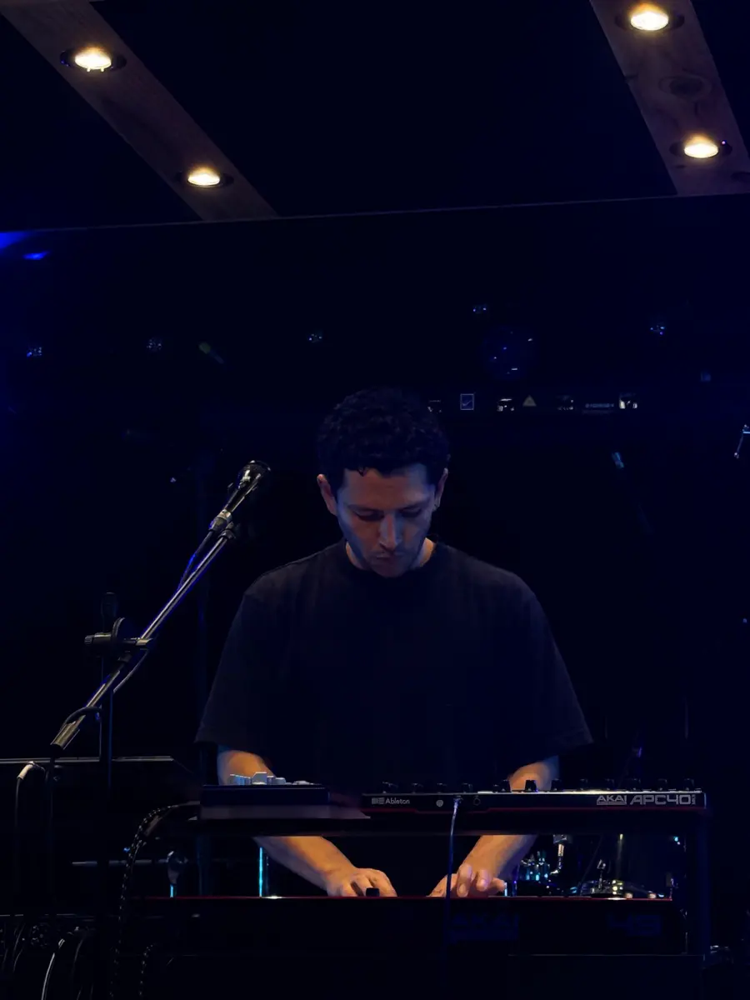


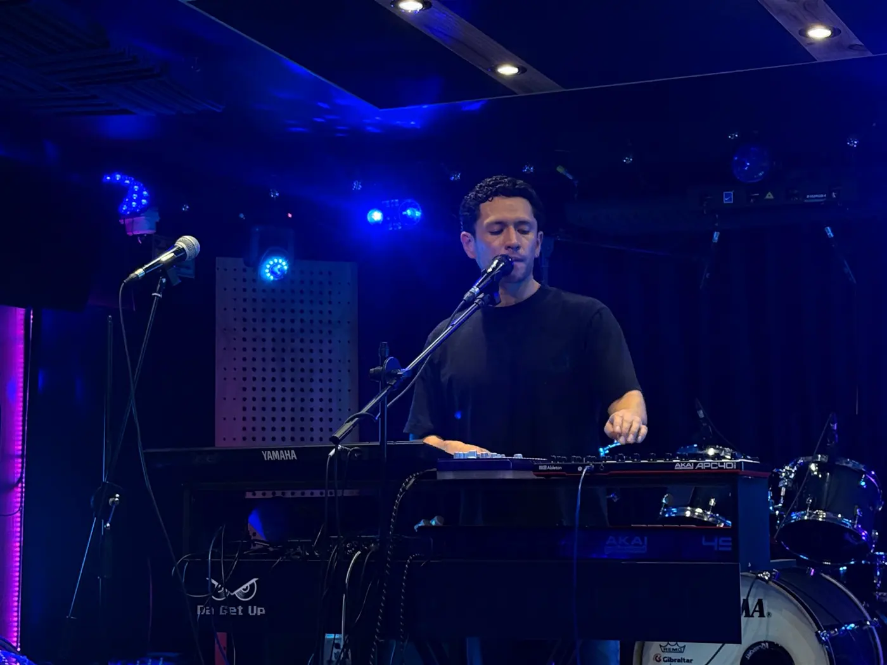
Dirección de arte
- Real
- Personas, lugares y pantallas que existen. Nada de banco de imágenes ni personas generadas con IA.
- En acción
- Gente haciendo algo: tocando, dibujando, revisando un tablero. No se posa mirando a cámara con los brazos cruzados.
- Luz
- Luz de lugar: ventana, lámpara, tarima. Fondos oscuros o neutros. Sombras con detalle.
- Rojo en cuadro
- Si el rojo está en la escena, mejor: una prenda, una luz, un objeto. No se pinta después.
- Marca en cuadro
- El logo aparece porque está ahí, en un saco o en una pantalla. No se superpone a la foto si ya se ve.
- Permisos
- Toda foto de cliente, de su local o de su equipo necesita permiso escrito antes de publicarse.
Tres tratamientos
La misma foto, tres oficios.
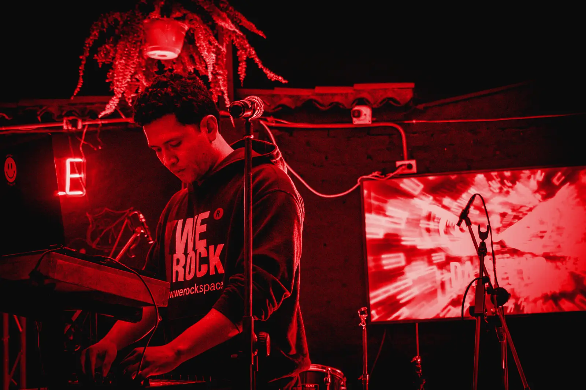
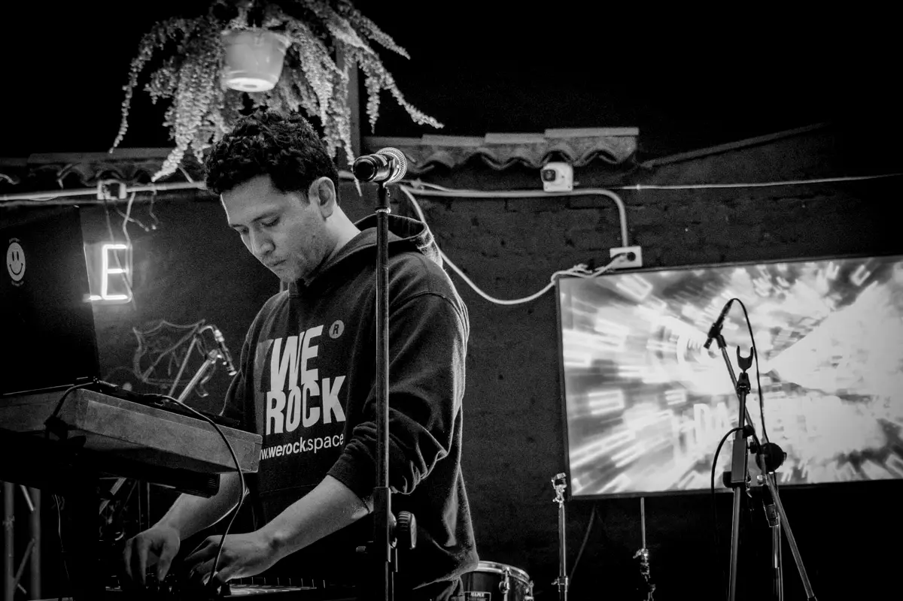
Encuadres
El bloque rojo marca dónde va el sujeto. El resto es aire para el titular.
Lo que falta fotografiar
Pendiente: una jornada de fotosEn el archivo no hay fotos del estudio ni de la Sabana. Este manual no las inventa. Esta es la lista de tomas.
Retrato 4:5 trabajando, luz de ventana, fondo oscuro.
Plano general y tres detalles: mesa, pantallas, equipos de música.
Cajicá y Zipaquirá en horizontal. Amanecer o final de la tarde.
Tres clientes con permiso firmado, en su lugar de trabajo.
Qué evitar
- Banco de imágenes: oficinas genéricas, apretones de manos, gente señalando una pantalla.
- Personas generadas con IA o retoques que cambien cómo se ve alguien.
- Clichés de rock: guitarras en llamas, calaveras, cuernos con la mano, cuero y taches.
- Filtros de moda, viñetas fuertes, HDR y cielos reemplazados.
- Maquetas de dispositivos flotando en degradados.
- Duotono en fotos de producto o de casos. El duotono es para fondos.
Video y reels
David graba. El sistema se encarga de que todos los reels se vean de la misma casa.
- Formato
- Vertical 9:16, 1080 × 1920. Primer cuadro con titular: sirve de portada.
- Zonas
- Sin texto en el 14 % superior ni en el 22 % inferior. Ahí va la interfaz de la aplicación.
- Subtítulos
- Barlow 800 en mayúsculas, blanco, máximo dos líneas. La palabra clave lleva fondo rojo. Siempre encendidos.
- Ritmo
- Cortes a tempo. Una idea cada tres o cuatro segundos. La primera frase es la tesis, no un saludo.
- Cierre
- Un compás de logo negativo sobre negro: 1,92 s. Sin animaciones de logo.
- Sonido
- Voz limpia primero. Música propia o con licencia, nunca por encima de la voz.
- Peso
- Los videos no viven en el repositorio del sitio. En la web, siempre con póster y sin carga previa.
Todo entra a tempo.
El movimiento de We Rock explica o confirma. Nada se mueve para adornar. Y todo lo que se mueve lo hace sobre la misma rejilla de tiempo, como una pista de house: un pulso cada 480 milisegundos.
Cuatro principios
Una animación muestra cómo se conectan dos cosas o confirma que algo pasó. Si no hace ninguna de las dos, sobra.
Las entradas arrancan rápido y se asientan. Las salidas son más cortas y nadie las nota.
Todas las duraciones son divisiones de un compás a 125 BPM. Por eso el sitio se siente como una sola pieza y no como efectos sueltos.
Con movimiento reducido en el sistema, todo aparece en su estado final. El contenido nunca depende de una animación ni de JavaScript para verse.
Tempo y duraciones
Un compás de 4/4 a 125 BPM dura 1,92 s. Sus divisiones son las únicas duraciones de la marca.
Hover, foco, presionar un botón, marcar una casilla.
Menús, pestañas, acordeones, avisos.
Bloques que entran al hacer scroll. Cortina del índice.
Titulares de portada, contadores de cifras, trazo del pulso.
Ciclo del latido "en vivo". Nada de interfaz dura un compás completo.
Desfase entre elementos de una lista: 60 ms, un treintaidosavo. Máximo seis elementos escalonados. Del séptimo en adelante entran juntos.
Curvas
Cuatro curvas. Si una animación necesita otra, se revisa la animación.
cubic-bezier(.16, 1, .3, 1)Llega con golpe y se asienta. Titulares, bloques, cifras.
cubic-bezier(.2, 0, .38, .9)Cambios de estado dentro de la pantalla.
cubic-bezier(.4, 0, 1, 1)Lo que se va. Siempre un escalón más corto que la entrada.
cubic-bezier(.7, 0, .2, 1)Solo para el trazo del pulso.
Transiciones
Pasa el cursor o toca cada una.
- Scroll
- Los bloques suben 28 px y aparecen. Una sola vez. No se repite al volver.
- Entre páginas
- Transición nativa del navegador con cortina. El pulso de la barra se mantiene. Si el navegador no la soporta, cambio directo.
- Pulso
- Se dibuja de izquierda a derecha en 960 ms al entrar en pantalla. Late solo en estado en vivo.
- Banda
- La cinta de palabras se detiene al pasar el cursor y con movimiento reducido.
Límites
Vienen de la auditoría del sitio y de lo aprendido en octubre.
- Animar solo
transform,opacityyclip-path. - El titular principal se pinta con CSS, sin esperar JavaScript.
- Pausar todo lo que sale de pantalla.
- Foco visible al instante, sin transición.
- Menos de 60 KB de JavaScript comprimido en el Home.
- Canvas a pantalla completa ni fondos de partículas.
backdrop-filternimix-blend-modeen hover.- Parallax, cursores personalizados ni scroll secuestrado.
- Animaciones en bucle distintas del pulso y del estado de carga.
- Videos que se reproducen solos con sonido.
Piezas listas para armar.
Todo lo de este capítulo es HTML y CSS real, hecho con los tokens. Lo que se ve aquí es lo que se construye en werock.space. Cada componente funciona en fondo oscuro y en fondo claro con solo cambiar el tema.
Botones
Un primario por pantalla. El texto dice qué pasa al oprimir: verbo y objeto.
- Medidas
- 52 px de alto, 26 px de relleno lateral, radio de 2 px. Pequeño: 40 px. Zona táctil mínima: 44 px.
- Texto
- Barlow 800, 15 px, mayúsculas, 0,06 em. Blanco sobre rojo: 4,73:1.
- Hover
- Oscurece a rojo profundo y la flecha avanza 5 px. 120 ms.
- Foco
- Anillo de 2 px separado 3 px. Ultramar claro sobre negro, tinta y azul noche. Ultramar sobre crema y blanco. Blanco sobre rojo, donde el azul no entra.
- Enlaces
- Dentro del texto van subrayados y en ultramar: así se ve un enlace. El botón terciario conserva la línea roja porque es una acción, no una referencia.
Etiquetas de estado
El chip verde con latido solo se usa cuando el dato se actualiza sin intervención humana. Si el dato es fijo, va el chip de dato con su fecha.
Tarjetas
Toda la tarjeta es el enlace. Al pasar el cursor sube 4 px y aparece la línea roja. Sobre crema o sobre azul noche, la tarjeta va en azul noche 2.
Renovación
Marca, sitio y CRM para una empresa con historia que necesita verse y operar como hoy.
Nombre por validarVer el programa →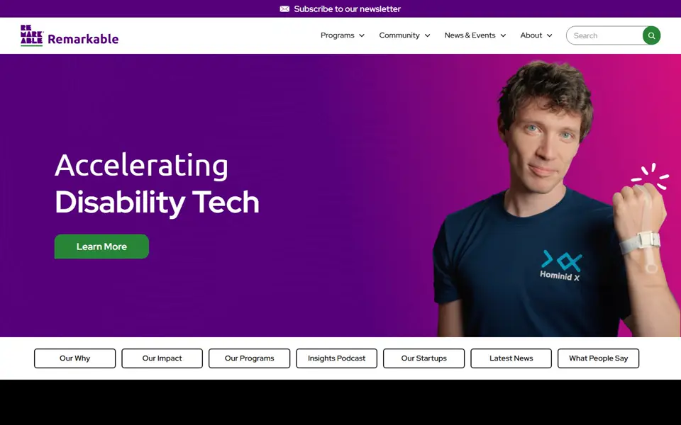
Remarkable
Marca y sitio accesibles para una aceleradora de tecnología para personas con discapacidad. Con Think Creative Agency, Sídney.
Leer la bitácora →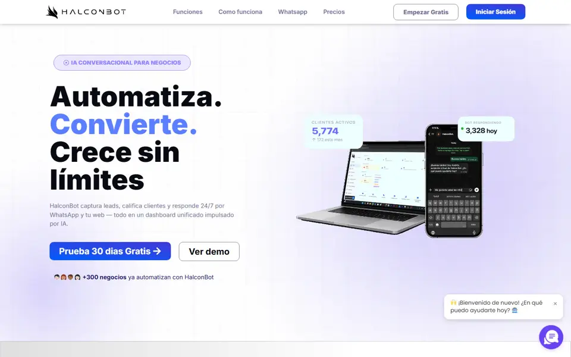
HalconBot
Agente de IA para WhatsApp e Instagram. Atiende, cotiza y agenda las 24 horas.
Probar el agente →Tablero de cifras
Es la pieza central del Sistema abierto. Aquí se muestra con cinco cifras ya medidas y publicables. No está conectado: por eso no lleva el chip verde.
Rendimiento en escritorio
Lighthouse · oct 2026Rendimiento en móvil
Lighthouse · oct 2026Páginas con título, meta y canónica únicos
Rastreo · 2026-11-06Errores de consola en el Home
Auditoría · 2026-11-06Contacto que llegó desde ChatGPT, sin pauta
Confirmado · 2026-09-22- Fondo
- Azul noche. Es la superficie de los datos.
- Cifra
- Plex Mono 700 en ámbar. Unidad en 400 y en piedra.
- Qué mide
- Una línea en Barlow. Sin adjetivos.
- Pie
- Fuente y fecha, siempre. En vivo: "Actualizado hoy, 08:00".
- Entrada
- Cuenta de 0 al valor en 960 ms. El pulso marca un pico por cifra.
- Nunca
- Facturación, nombres de clientes ni cifras sin fuente.
La auditoría propone estas cinco para el tablero en vivo. Falta que David las apruebe y que exista la conexión de datos:
- Visitas de los últimos 30 días.
- Porcentaje de sesiones que llegan desde asistentes de IA.
- Contactos del mes.
- Tiempo medio de primera respuesta de HalconBot.
- Disponibilidad del sitio.
Caso tipo bitácora
Una línea de tiempo con fechas. El punto ámbar marca una cifra. Se muestra con la trayectoria de David en Boxi Sleep, tomada de fuentes publicadas.
Pendiente: tres clientes con permisoColchones en caja, vendidos por internet.
Boxi trae a Colombia el colchón comprimido al vacío que llega a la casa en una caja. David Higuera asume como CSO: dirige marketing, desarrollo y área comercial, y crea la identidad visual.
Y cerca de $320 millones de pesos mensuales en ventas.
Cómo se midió: cifras publicadas por la revista P&M, abril de 2017, pág. 17.Categoría Mejor Pyme de eCommerce.
Fuente: ecommerceday.co, 13 de septiembre de 2017.Ronda con Axon Partners Group, de España, en cuatro fases.
Fuente: capital-riesgo.es.- Estructura
- Punto de partida, qué se construyó, cifra, qué sigue. En ese orden.
- Cada cifra
- Lleva periodo, cómo se midió y fuente. Si la fuente es el cliente, permiso escrito.
- Cita
- Una sola, con nombre y cargo. Nunca anónima.
Formularios
Etiqueta visible siempre encima. El marcador de posición no reemplaza la etiqueta.
- Errores
- Dicen qué pasó y cómo se arregla. Texto en rojo claro, con ícono. Nunca solo color.
- Orden
- Primero el valor, después el dato. El diagnóstico pide nombre y WhatsApp solo al final.
- Después
- Todo formulario dice qué pasa al enviar y en cuánto tiempo.
- Legal
- Autorización de datos visible, sin casilla marcada de antemano.
Navegación
Visible en escritorio. La hamburguesa es solo para móvil. Las secciones salen de la propuesta de la auditoría.
Estructura final por validar- Barra
- 72 px en escritorio, 60 px en móvil. Negra, fija, sin desenfoque.
- Logo
- Negativo. Excepción al mínimo de 120 px: en la barra puede ir a 36 px de alto, porque el nombre se lee a ese tamaño en pantalla.
- Activo
- Texto blanco y línea roja de 2 px debajo. La línea entra de izquierda a derecha en 240 ms.
- Acción
- Un solo botón rojo: Diagnóstico. WhatsApp vive como botón flotante, sin barra inferior adicional.
- Móvil
- Menú a pantalla completa con cortina. Enlaces en Barlow 900, mínimo 44 px de alto.
Decisión de David La regla de 120 px del logo choca con la barra de navegación. Se propone la excepción de arriba o usar solo el rayo en la barra, como hace este manual.
Estados del sistema
Lo que el usuario ve cuando algo carga, falta o falla.
Esqueleto con la forma del contenido. Sin ruedas a pantalla completa.
Aún no hay cifra para este periodo.
Se dice qué falta y cuándo llega. Nunca un cero inventado.
Esta página no existe.
En español, con buscador y tres enlaces útiles. Sin chistes.
Volver al inicioPara WordPress
Los tokens se cargan una vez y se declaran en theme.json, para que el editor de bloques ofrezca solo los colores y tamaños de la marca.
// theme.json · fragmento
{
"version": 3,
"settings": {
"color": {
"custom": false, "defaultPalette": false,
"palette": [
{ "slug": "rojo", "name": "Rojo Rock", "color": "#E8000A" },
{ "slug": "negro", "name": "Negro", "color": "#0A0A0A" },
{ "slug": "crema", "name": "Crema", "color": "#F5F2EB" },
{ "slug": "tinta", "name": "Tinta", "color": "#1B1A17" },
{ "slug": "azul-noche", "name": "Azul noche", "color": "#0E1A2E" },
{ "slug": "ultramar", "name": "Ultramar", "color": "#2747E0" },
{ "slug": "ambar", "name": "Ámbar · dato", "color": "#F2B600" },
{ "slug": "verde", "name": "Verde · vivo", "color": "#2EC4B6" }
]
},
"typography": {
"customFontSize": false,
"fontFamilies": [
{ "slug": "barlow", "name": "Barlow", "fontFamily": "Barlow, Arial, sans-serif",
"fontFace": [ { "fontFamily": "Barlow", "fontWeight": "900",
"src": ["file:./assets/fonts/barlow-900.woff2"] } ] },
{ "slug": "dato", "name": "IBM Plex Mono", "fontFamily": "\"IBM Plex Mono\", monospace" }
]
},
"layout": { "contentSize": "800px", "wideSize": "1280px" },
"spacing": { "spacingSizes": [
{ "slug": "40", "size": "16px", "name": "4" },
{ "slug": "50", "size": "24px", "name": "5" },
{ "slug": "60", "size": "32px", "name": "6" } ] }
}
}
- Una sola fuente de verdad:
we-rock-tokens.cssse encola antes que cualquier otra hoja de estilos del tema. - Temas por sección: cada bloque de sección lleva
data-tema="oscuro",tinta,noche,claroorojo. Los componentes no cambian. - Sin constructores visuales. Bloques propios o patrones, para no cargar CSS y JavaScript que el sitio no usa.
- Fuentes: woff2 autoalojadas, con
font-display: swapy precarga solo del peso 900.
Una sola casa, ocho puertas.
Sitio, propuestas, redes, correo, presentaciones, papelería, WhatsApp y HalconBot. Las maquetas de este capítulo están hechas con los mismos tokens y componentes. Los textos de cliente son de ejemplo. Las cifras son las ya publicadas.
werock.space, primera pantalla
- Programas
- Sistemas
- Casos
- Método
- Nosotros
Construimos la estructura que hace crecer tu empresa.
Y te mostramos la nuestra. Marketing, tecnología y ventas bajo una sola dirección, con las cifras a la vista.
Hacer el diagnóstico, 90 s →Carrusel, historia y portada de reel
Auditamos nuestro propio sitio.
Ahora el tuyo.
Diagnóstico estratégico gratuito
Marketing en modo banda
- Ritmo
- Negro, azul noche, negro, crema. Las láminas de dato van en azul noche. El rojo de fondo se usa una vez por carrusel, como máximo.
- Cabezote
- Número de edición y folio en mono. Arriba, en todas las láminas.
- Logo
- Primera y última lámina. En las intermedias, solo el rayo.
- Usuario
- Pendiente El usuario de Instagram de We Rock no está confirmado. No se imprime hasta que David lo dé.
Documentos que se leen como una firma
Propuesta · Infraestructura Digital™
Nombre del cliente
Noviembre de 2026
Preparada por David Higuera
02 · Recomendación
Empezar por la operación.
Diagnóstico en tres líneas, recomendación con su razón y lo que se entrega. Los enlaces van en ultramar.
We Rock02 / 08
Sistema abierto.
Una cifra por diapositiva. La frase dice qué significa.
Firma de correo y tarjeta
Quedo atento a sus comentarios.
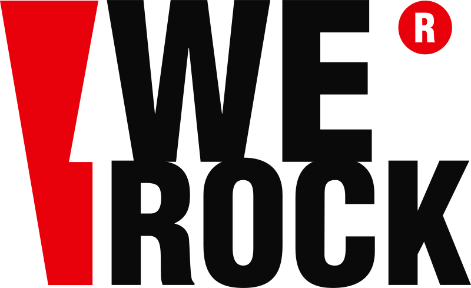 |
David Higuera CEO · We Rock Firma de crecimiento estratégico |
+57 312 576 6056
davidh@werock.space
werock.space · Cajicá
Pendiente de David Cargo y ciudad oficiales. El Brand Kit v1.0 dice "Fundador · Dirección Estratégica" y "Bogotá". El sitio y la auditoría dicen Cajicá. Este manual usa CEO y Cajicá.
El canal donde se cierra
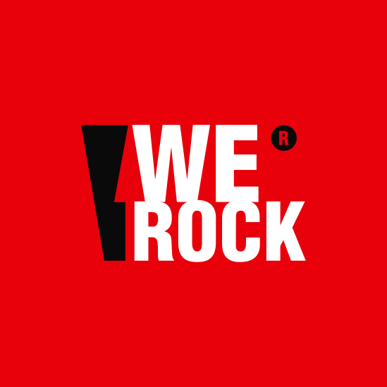
We RockCuenta de empresa- Saludo
- Nombre, qué es y qué puede hacer. En una burbuja.
- Firma
- Al pie de cada respuesta: "Esto lo respondió HalconBot, el agente que instalamos en tu empresa."
- Límite
- No da precios finales ni promete resultados. Agenda o pasa a David.
- Visual
- Rayo sobre negro como avatar. Burbujas en tinta 2. Las del usuario, en crema.
halconbot.com tiene su propia marca y hoy no enlaza a We Rock. Falta decidir si HalconBot se presenta como producto de We Rock, con este sistema, o como marca aparte.
La marca puesta
Esta aplicación ya existe. Prenda negra, logo negativo al pecho y la dirección del sitio debajo. Es la referencia para cualquier prenda nueva.
- Prendas negras o crema. Nunca rojas.
- Logo al pecho, mínimo 22 cm de ancho. O rayo solo, de 8 cm, a un costado.
- Un solo elemento por cara.
Llévate el sistema.
Los tokens, los logos, las fuentes y una guía de una página con lo que sí y lo que no. Con esto se arma el nuevo werock.space sin volver a decidir un color.
Descargas
Pendiente de David
Lo que este manual no puede decidir ni inventar.
- Las cinco cifras del tablero en vivo.
Aprobar la lista de la auditoría o cambiarla. Ninguna puede ser facturación.
- Tres clientes con permiso escrito de caso.
Sin permiso no hay bitácora. La auditoría sugiere Latidos, Pet Empire, Kassa o Solidaridad.
- Cifras de Vanity.
El portafolio dice 74 % de mensajes resueltos por IA y, a la vez, 682 de 1.954 mensajes pasaron a una persona, que es 35 %. Hay que revisar la fuente antes de publicarlas juntas, y confirmar permiso.
- Calificación en Google.
El sitio muestra 4,9 en unas páginas y 5,0 en otras. Definir una sola, con conteo de reseñas y fecha de consulta.
- Tú o usted.
Recomendación en el capítulo 02. Falta la decisión.
- Jornada de fotos.
Estudio en Cajicá, la Sabana y tres clientes. Lista de tomas en el capítulo 07.
- Reglas del logo heredadas.
Área de seguridad, 120 px y 25 mm vienen del v1.0 sin confirmar. También la excepción para la barra de navegación.
- Cargo, ciudad y usuario de Instagram.
CEO y Cajicá en este manual. El usuario de Instagram sigue sin confirmar.
- Nombres de programas y navegación.
Renovación, Demanda, Conversión y Dirección son propuesta de la auditoría.
- HalconBot.
Producto de We Rock con este sistema, o marca aparte.
- Propósito, promesa y manifiesto.
Están escritos a partir de las fuentes. Son de David: se ajustan hasta que suenen a él.
- Pesos 500 y 600 de Barlow.
No están en el archivo local. El manual funciona sin ellos. Se agregan si David los quiere para texto.
Referencias
Se tomaron estándares, no diseños. Todas se leyeron el 9 de noviembre de 2026, salvo las dos últimas, leídas en la auditoría del 6 de noviembre.
- w3.org/WAI/WCAG22/Understanding/contrast-minimum.htmlUmbrales de contraste: 4,5:1 en texto, 3:1 en texto grande y en interfaz.
- carbondesignsystem.com/elements/motion/overviewIBM Carbon. Movimiento con pocas duraciones nombradas y curvas distintas para entrar, salir y cambiar de estado.
- styleguide.mailchimp.com/voice-and-toneMailchimp. Separar voz, que no cambia, de tono, que se ajusta al momento del lector.
- pentagram.com/work/discipline/brand-identityPentagram. La identidad como sistema: tipografía, color y movimiento, no solo logo.
- wolffolins.com/aboutWolff Olins. Identidad verbal al mismo nivel que la visual, y gobierno de la marca.
- koto.comKoto. Casos con cliente, una línea, año y sector.
- wearecollins.comCollins. Oferta por situación de negocio y no por servicio.
- kota.co.ukKOTA. Cada cifra enlaza a su caso. Rangos de precio y plazos a la vista.
- nk.studioNK Studio. Un estudio latinoamericano como referencia mundial. Casos por programa.
Se intentó leer ibm.com/design/language, brand.mozilla.com, m3.material.io y atlassian.design. No devolvieron contenido legible y no se usaron.
Versiones
- v2.1 · 10 nov 2026
- Entra el azul, aprobado por David: azul noche como superficie alterna y ultramar como acento de interacción y segunda serie de datos. Nueva proporción de color. El foco y los enlaces pasan a ultramar. Regla nueva: rojo y ultramar no se tocan. Sale el azul señal de la versión 2.0.
- v2.0 · nov 2026
- Esencia y concepto Sistema abierto. Voz por canal. El rayo como elemento gráfico. Paleta ampliada con contrastes medidos. Jerarquía tipográfica y mono para datos. El pulso. Movimiento a tempo. Componentes web. Tokens.
- v1.0 · oct 2026
- Brand Kit: logos en vectores desde el archivo maestro, colores, Barlow, reglas básicas de uso y descargas.
- 2018
- Logo original. Sin cambios desde entonces, salvo el rojo, que pasó de #FF0000 a #E8000A.